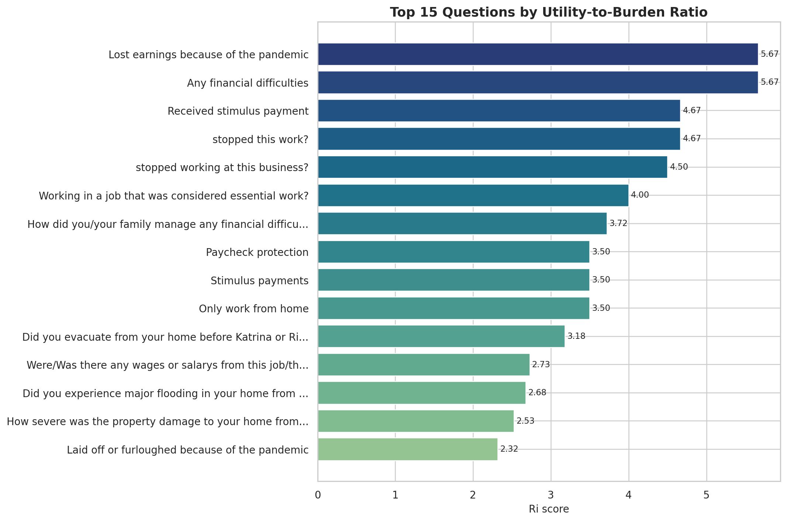
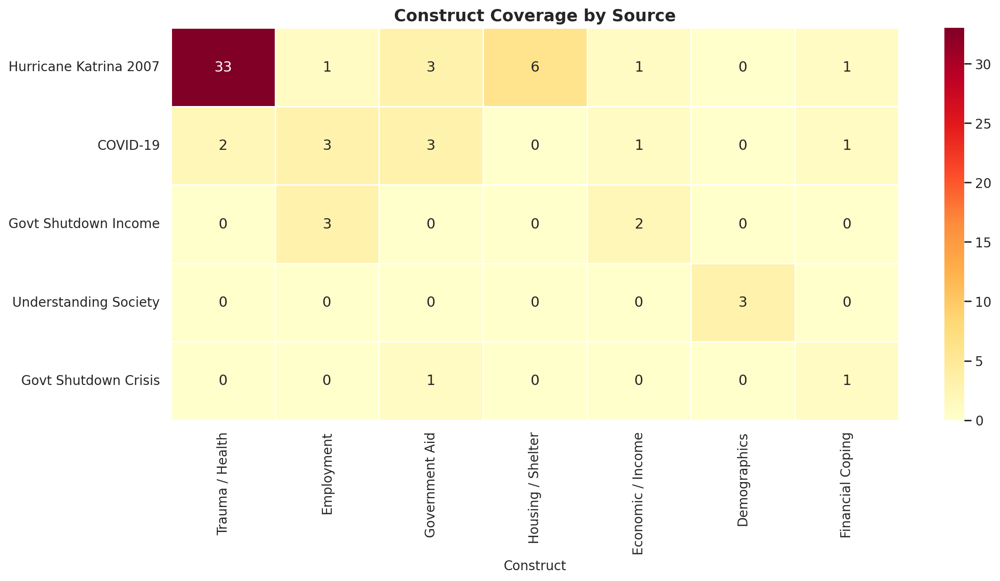

Top-ranked questions
Highest-value questions remain compact items around hardship, earnings loss, and work disruption.
Current CSV-driven dashboard for the Katrina-integrated crisis module. The figures and table below are refreshed from the final ranked-question file and the maintained taxonomy helpers.
Open the refreshed stakeholder-facing outputs directly from here. The master page combines the generic and crisis-specific questionnaire demos in one place.
Single page showing both the generic foundation demo and the crisis-specific combined demo side by side.
Generic DemoLonger, presentation-ready version of the generic module that still preserves the 7-question scored core.
Specific DemoGeneric lead-in plus the active pandemic and disaster toggle, with alternate financial and war template banks.
ReportFormatted public report with notebook-backed figures, methodology tables, formula definitions, and validated timing benchmarks.
The final report is now surfaced as a formatted web page and summarized directly inside the dashboard for faster stakeholder review.
The ranking objective optimizes information yield per unit of burden, then applies a hard 30-minute budget so the final module stays deployable.
Utility comes from taxonomy-weighted crisis keywords. Burden penalizes longer wording and structural complexity. Katrina integration is what strengthened trauma, housing, displacement, and aid coverage in the final selected set.
The formatted report now packages the figures, source tables, toggle breakdowns, constants, and time-budget evidence in a way that is appropriate for public review on GitHub Pages instead of exposing a raw markdown export.

Highest-value questions remain compact items around hardship, earnings loss, and work disruption.

The selected set now shows visible trauma and health, housing, and aid coverage alongside employment and income disruption.
Bubble radius tracks Ri. Selected questions are highlighted with a darker outline.
The filtered top 12 questions ordered by Ri.
Stacked counts by source, based on the currently filtered rows.
Exploded construct counts from the taxonomy-derived construct assignments.
The table reflects the active filters. Ri, utility, burden, and word count remain sortable visually by inspection.
| Question | Source | Toggle | Status | Ui | Bi | Ri | Words |
|---|